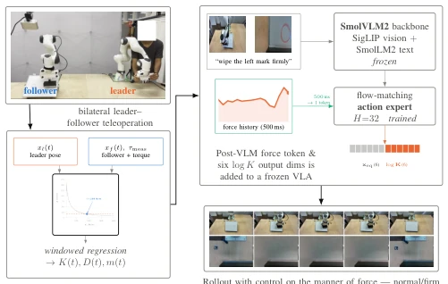
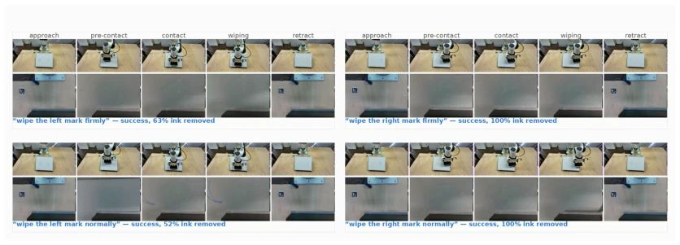
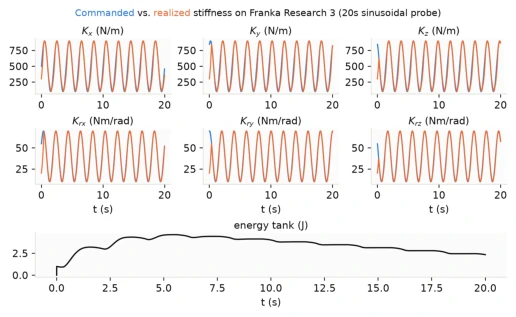

This paper gave the embodied intelligence community a lesson on "mathematical rigor". Ironically, it solved the "soft" problems that everyone is accustomed to using extremely "rigorous" mathematical means. The authors pointed out incisively: the reason existing VLA models cannot learn "force" is not that the model is inadequate, but that the demonstration data itself is poisoned—because looking only at where the robot finally stops and how much force it exerts, one cannot distinguish at all whether it was "wanted to push lightly but didn't push enough" or "wanted to push hard but pushed enough". This "unidentifiability" is a mathematical deadlock, not a lack of data. The paper used four-channel bilateral teleoperation to forcibly untie this knot, separating "intended position" and "actual position", thereby extracting impedance labels. Although the experiment was only verified on the task of wiping a whiteboard, and rotation axis impedance identification is limited, the logical loop is extremely elegant. However, generalizing "whiteboard wiping" such planar tasks to complex 3D assembly probably depends on whether the subsequent work can leverage this "free" logic more effectively.
The core pain point lies in contact-rich tasks (such as wiping, assembly), where robots need to adjust "force" (Compliance), while existing Vision-Language-Action (VLA) models usually only output position and cannot output stiffness. Existing attempts (such as ForceVLA [6], FD-VLA [15]) often rely on additional force/tactile sensors, or rely on privileged information in simulation [9], or even rely on human-specified interaction frameworks [8]. More fatally, traditional teleoperation interfaces (such as SpaceMouse, VR controllers) only record the robot's "actual pose" and "contact force", causing the "operator's intended equilibrium position" and "operator's stiffness" to be completely confounded (Confounded) mathematically. As stated in the paper, a soft spring pulled far and a hard spring pulled close produce the same force, and cannot be distinguished solely based on observation data. This "unidentifiability" (Identifiability Problem) makes it impossible for existing interfaces to provide impedance supervision in principle, forcing researchers to introduce expensive hardware or complex simulation assumptions.
The overall Pipeline is divided into two stages: "impedance label extraction" and "policy fine-tuning". First, utilizing a four-channel bilateral teleoperation (Four-channel bilateral teleoperation) architecture, defining the master arm (Leader) trajectory as the operator's intended equilibrium position (xeq), calculating displacement from the slave arm (Follower)'s actual pose (xf) and contact force (f), thereby eliminating the confusion between stiffness and intent mathematically. Next, through Sensorless Wrench Estimation, utilizing the manipulator's built-in joint torque sensors, combined with gravity compensation and a bias model fitted with Random Fourier Features, inferring end-effector contact force from joint torques, without requiring additional force/torque sensors. Subsequently, introducing an "Identifiability Mask", only extracting anisotropic stiffness (K) and damping (D) labels for each axis and each time step via sliding window regression when displacement is sufficiently large, force exceeds noise floor, and regression condition number is good. Finally, based on the SmolVLA [5] backbone network, using the extracted stiffness labels as supervision signals to fine-tune the policy, enabling it to output target pose and stiffness (log K) simultaneously, and ensuring control stability during inference through Temporal Ensembling and Energy Tank mechanisms.

Fig. 1: From bilateral demonstrations to instruction- conditioned compliance.
实验Experiments
在Franka Research 3机械臂上进行白板擦拭任务，指令包含“左/右”标记和“正常/用力”两种力度模式。对比了五种策略：固定刚度（Fixed-K）、拟合常数刚度（Fitted-K）、ForceVLA [6]、ForceVLA2 [7] 以及本文方法。结果显示，本文方法是唯一能根据语言指令（“用力”vs“正常”）显著改变接触力（RMS从6.4N升至9.1N，p=0.023）的策略，且成功率和墨水去除率最高（50% vs 41.7%）。消融实验表明，冻结力历史输入会导致性能下降，验证了力通道的有效性。此外，离线基准测试证明提取的标签包含可学习信号，预测器优于常数预测器。局限性在于旋转轴阻抗因任务特性（平面擦拭）识别较弱，且力估计受构型影响需固定零空间。
Conducted whiteboard wiping task on Franka Research 3 manipulator, instructions include "left/right" markers and "normal/hard" two force modes. Compared five strategies: Fixed-K, Fitted-K, ForceVLA [6], ForceVLA2 [7], and the method of this paper. Results show that the method of this paper is the only one that can significantly change contact force according to language instructions ("hard" vs "normal") (RMS from 6.4N to 9.1N, p=0.023), and has the highest success rate and ink removal rate (50% vs 41.7%). Ablation experiments show that freezing force history input leads to performance degradation, verifying the effectiveness of the force channel. Additionally, offline benchmark tests prove that the extracted labels contain learnable signals, and the predictor outperforms the constant predictor. Limitations lie in that rotation axis impedance identification is weak due to task characteristics (planar wiping), and force estimation is affected by configuration requiring fixed null space.

Fig. 3: Qualitative rollouts of our policy, scene camera (top sub-row) and wrist camera (bottom sub-row), across the 2×2 referent×manner instruction grid (“wipe the left/right mark firmly/normally”), five phases per rollout (approach, pre-contact, contact, wiping, retract). Each cell shows one representative rollout (n = 1). Aggregate success rates across all rollouts are reported in Table IV.

Fig. 4: Commanded vs. realized stiffness under a 20s si- nusoidal probe across all six axes, with the accompanying energy-tank trace, recorded on the physical follower arm.